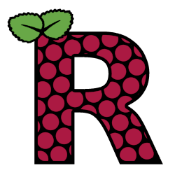

R for the Raspberry Pi

The aim of r4pi.org is to provide an up-to-date version of R for the Raspberry Pi computer.
In addition, we provide access to pre-compiled versions of some of R's most popular packages.
Background
R is the premier language for statistical computing and has millions of users around the world.
There's already a build available for the Raspberry Pi in the default OS repos, but it's a quite an old version.
We provide up-to-date builds of R and also take a number of the extension packages from CRAN and pre-compile them ready for use on the Pi to make installation fast and simple.
R in action
It's possible to write R code in any text editor and a number of the text editors and IDEs available for the Pi support R either straight out-of-the-box or, as in the VSCode screenshot below, with the addition of a plugin.

The screenshot above shows some of the analytical and plotting capabilities of R with code borrowed from the "palmerpenguins" package website.